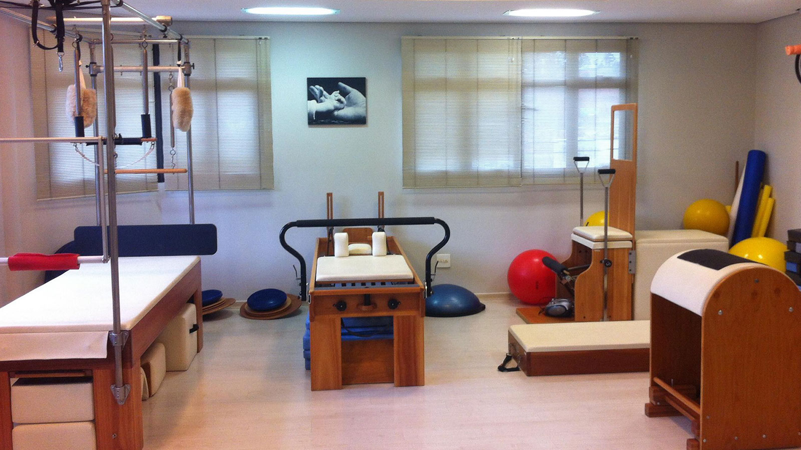

Nosso conceito é inovador, pois oferecemos um olhar em 360º para o cliente. Por isso, nossa avaliação fisioterapêutica é criteriosa para identificar os fatores causadores das dores e lesões, além dos fatores que podem contribuir positivamente no processo de recuperação funcional. Essa visão, associada a nossa estrutura e ao trabalho personalizado e individualizado nos possibilita ter o foco na solução funcional de cada paciente. E assim, promover as atividades: esportivas, profissionais, recreacionais, etc
Header
